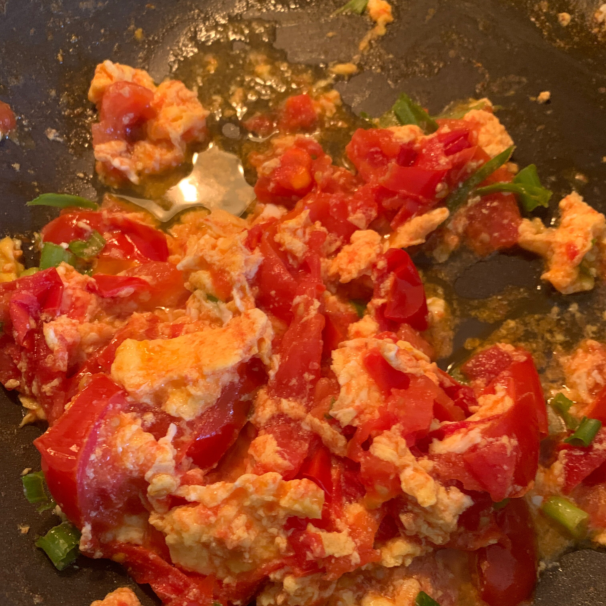

Chinese Stir-Fried Egg and Tomato

Description
This is a super easy to make Chinese dish with easy to find ingredients that one can easily find in any kitchen. It's one of the first dishes I learned to cook when I was a kid and it always tastes really good, especially when served with rice.
Ingredients
- Large eggs
- Tomatoes
- Salt
- White Sugar
- Oil
- Water
Steps
- Crack eggs into a bowl and whisk
- Chop tomatoes into medium sized pieces.
- Add oil to skillet on medium-high heat and once the oil is hot add eggs
- Fry the eggs until it turns solid. Then, break the egg apart into many pieces and move to the sides of the skillet
- Add the tomatoes to the skillet along with salt and a little white sugar and let the tomatoes saute. If more of the soup/sauce is desired, water can also be added during this step.
- After tomatoes have softened up, stir the eggs and tomatoes together in the skillet. Your dish is done!